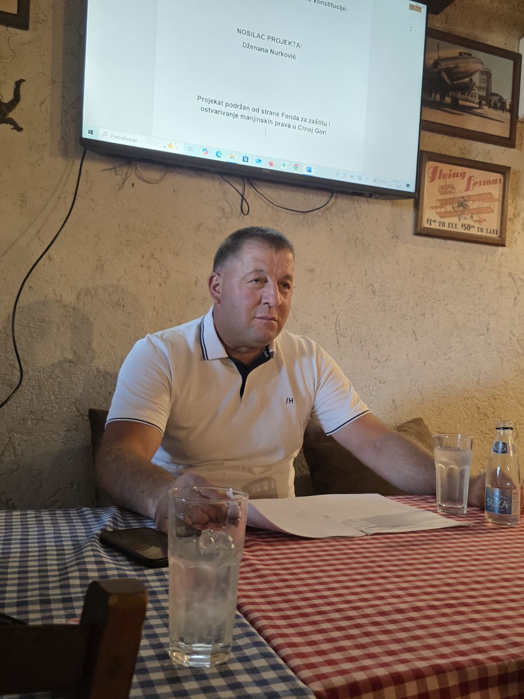

Interviju vodi: Dzenana Nurković
Fadile, kako vi lično doživljavate pojam identiteta?
Fadil:
Identitet za mene nije samo zbir spoljašnjih oznaka poput imena, nacionalnosti ili profesije – to je nešto mnogo dublje. To je unutrašnji osećaj kontinuiteta kroz sve promene koje doživljavamo u životu. To je ono u nama što se možda menja, ali nikada ne nestaje. Identitet je i način na koji reagujemo na životne izazove, naši principi i stavovi, ono što nas pokreće i uz što stojimo. U suštini, ja doživljavam identitet kao tihi kompas – vodi nas kroz sve okolnosti, čak i kad ne znamo tačno kuda idemo.
Možete li podeliti neka ključna životna iskustva koja su oblikovala vaš identitet?
Fadil:
Naravno. Jedan od ključnih trenutaka bio je moj odlazak na studije u drugi grad. Do tada sam živeo u svom "mehuru", u poznatom okruženju, okružen ljudima koji razmišljaju slično. Ali kada sam izašao iz te zone komfora, suočio sam se s drugačijim kulturama, običajima i pogledima na svet. Tada sam prvi put osetio kako moj identitet reaguje – kako se prilagođava, ali i kako se bori da ostane veran samom sebi.
Drugo snažno iskustvo bilo je gubljenje člana porodice. Tada sam preispitao sopstvene vrednosti i odnose, i shvatio koliko su empatija i odgovornost deo mog identiteta. I treće, postajanje roditeljem mi je promenilo pogled na sebe – odjednom nisam bio samo "ja", već i neko na koga drugi oslanjaju identitet, što je ogroman izazov, ali i čast.
Da li smatrate da je vaš identitet više rezultat porodičnog vaspitanja ili vaših ličnih izbora? Zašto?
Fadil:
Iskreno verujem da su to dve sile koje zajedno oblikuju naš identitet. Porodično vaspitanje je temelj. U mojoj porodici su se negovale vrednosti kao što su poštovanje, čestitost, saosećanje. Te vrednosti su mi usađene kao osnovna pravila ponašanja. Ali ono što sam kasnije sam birao – kako da reagujem na nepravdu, koga da volim, čime da se bavim, čemu da verujem – to su bile moje lične odluke. I upravo u tim izborima, u trenucima kada sam mogao da odstupim, ali nisam, tu je identitet dobijao svoj oblik. Dakle, porodična osnova daje pravac, a lični izbori daju sadržaj.
Koliko su kultura, tradicija i jezik uticali na vaše formiranje kao osobe?
Fadil:
Ogromno. Kultura me naučila ko sam u širem smislu – kao deo naroda, istorije, vrednosnog sistema. Tradicija mi je dala osećaj pripadnosti – one sitnice koje možda ne primećujemo dok ih ne izgubimo: miris hleba iz detinjstva, način na koji se pozdravljamo, rituali porodičnih okupljanja. Jezik je, pak, temelj mog izražavanja – u jeziku se krije način na koji mislimo, a ne samo kako govorimo. Ponekad, kad čujem stare izreke, osetim više istine nego u stotinama stranica moderne psihologije. Kultura, tradicija i jezik su kao senka – idu sa mnom svuda, čak i kad mislim da sam ih ostavio negde iza.
Da li ste kroz život imali trenutke kada ste preispitivali svoj identitet? Možete li opisati takvu situaciju?
Fadil:
>Apsolutno. Imao sam period, posebno u kasnim dvadesetim, kada sam se trudio da udovoljim tuđim očekivanjima – društvenim, porodičnim, profesionalnim. Nosio sam "maske" koje su bile prihvaćenije, prikladnije. Na spolja gledano, sve je bilo u redu – posao, društvo, svakodnevica. Ali unutra sam osećao prazninu. To je bio trenutak kada sam prvi put zaista svesno preispitao svoj identitet. Postavio sam sebi pitanje: “Ako sve ovo nestane, ko sam ja zapravo?” I to pitanje me je nateralo da se vratim onome što me ispunjava, čak i ako to nije bilo popularno ni lako. Taj prelom je bio bolan, ali nužan da bih bio bliži sebi.
Kako savremeno društvo, mediji i društvene mreže utiču na vaš osećaj identiteta?
Fadil:
Uticaj je sveprisutan. Na društvenim mrežama, svi pokušavamo da predstavimo "najbolju verziju sebe". Ali često ta verzija nije autentična – već filtrirana, dotjerana i odobrena od strane algoritma. To može izazvati unutrašnji konflikt – da li sam ono što prikazujem, ili ono što jesam kada ugasim ekran?
Takođe, mediji nam često nameću ideale – kako treba da izgledamo, mislimo, osećamo. Ako nismo dovoljno svesni sebe, lako možemo upasti u vrtlog tuđih identiteta. Zato nastojim da koristim te platforme kao alat, ne kao ogledalo. Biram da pratim ljude koji me inspirišu, a ne koji me čine nesigurnim.
Postoje li aspekti vašeg identiteta koje birate da ne pokazujete u određenim društvenim situacijama? Ako da, zbog čega?
Fadil:
Da, i mislim da to nije nepoštenje, već životna mudrost. Ne pokazujem uvek svoju ranjivost, jer u nekim sredinama ona nije shvaćena kao snaga, već kao slabost. Takođe, ne iznosim svuda svoje duhovne ili političke stavove – ne zato što se stidim, već zato što nije svaki razgovor prostor za dubinu. Često biram da zadržim deo sebe za ljude koji znaju da slušaju srcem, ne samo ušima. To je način da zaštitim svoj identitet, a ne da ga krijem.
Koliko vam je važno da ljudi oko vas razumeju ko ste vi zaista, izvan društvenih uloga?
Fadil:
To mi je važno, ali sam prihvatio da nije uvek moguće. Ljudi nas često vide kroz svoje filtere – kao kolegu, oca, komšiju. Retki su oni koji zaista žele da vide iza etikete. Ipak, važno mi je da oni najbliži – porodica, prijatelji – poznaju onog pravog mene. Za mene je identitet kao knjiga – ne mora je svako pročitati do kraja, ali bar neka zna da nije naslov sve što postoji.
Kako balansirate između autentičnosti i očekivanja koje društvo nameće?
Fadil:
To je svakodnevna vežba. Naučio sam da ne mogu svima biti prihvatljiv ako želim da ostanem veran sebi. Nekada treba reći “ne” kada svi očekuju “da”. Nekada je tišina glasnija od odobravanja. Ali isto tako, ne odbacujem svako društveno pravilo – biram koja su mi bliska, a koja samo nametnuta. Autentičnost ne znači biti uvek kontra, već biti u skladu sa sobom. To je put koji nije lak, ali donosi mir.
I za kraj – verujete li da je identitet nešto što se jednom formira, ili nešto što se stalno iznova gradi i menja?
Fadil:
Verujem da je identitet proces, ne proizvod. Mi se menjamo sa svakom knjigom koju pročitamo, svakim mestom koje posetimo, svakim čovekom kojeg upoznamo. To ne znači da gubimo sebe – naprotiv, nadograđujemo se. Identitet je kao reka – ima svoje izvorište, ali ne teče uvek istim tokom. I to je ono što ga čini živim i istinitim.

← Nazad na početnu stranu